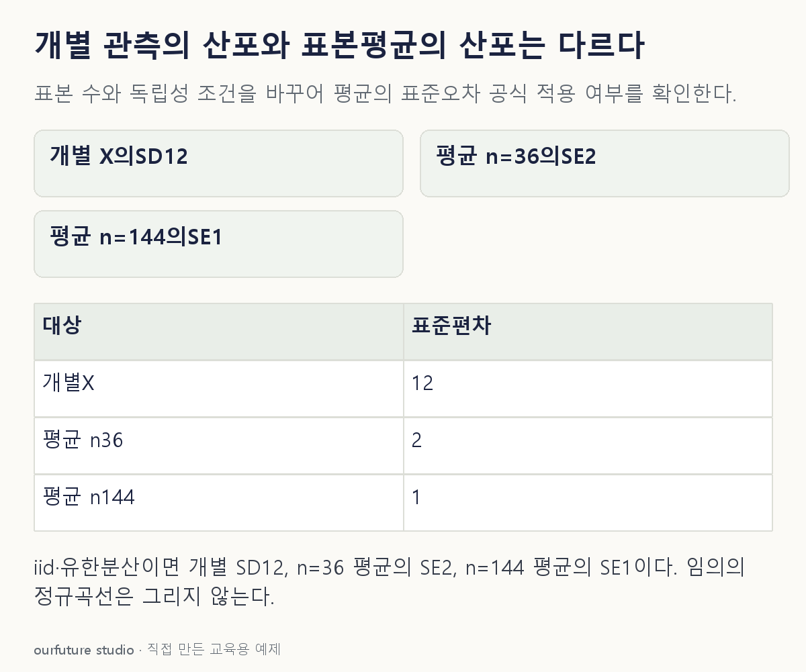

조건을 바꾸며 확인하기
유한분산·iid에서 σ/√n을 쓴다. σ=0인 퇴화분포에 비퇴화 정규분포 근사를 주장하지 않는다.
설명 그림과 비교하기
아래 그림과 표는 고정된 설명 예제입니다. 기본·변형 중 어떤 조건인지 캡션을 읽고, 바꾼 입력의 결과는 계산 칸에서 확인하세요.

같은 문제를 직접 골라 보기
평균100·표준편차12인 모집단에서 독립·동일분포 관측 36개를 뽑아 평균낸다.
조건을 더 바꾸면?
같은 모집단에서 표본 크기를 144로 바꾸면 평균의 표준오차는?
변형 풀이 확인
1
12/√144=1이다. 표본 수를 4배로 늘려 표준오차가 절반이 된다.
n개 값의 분포와 n개를 평균낸 값의 분포를 나눈다.